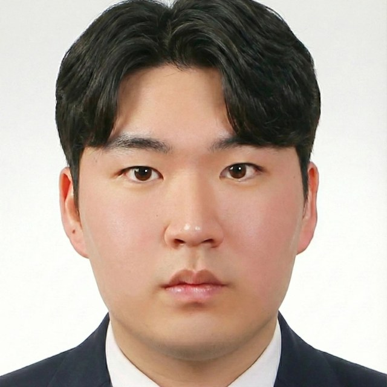
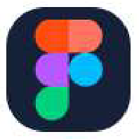
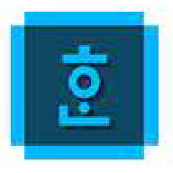
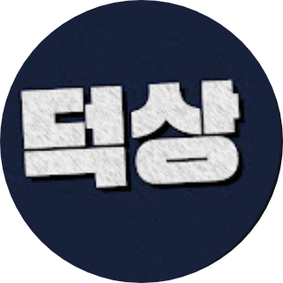
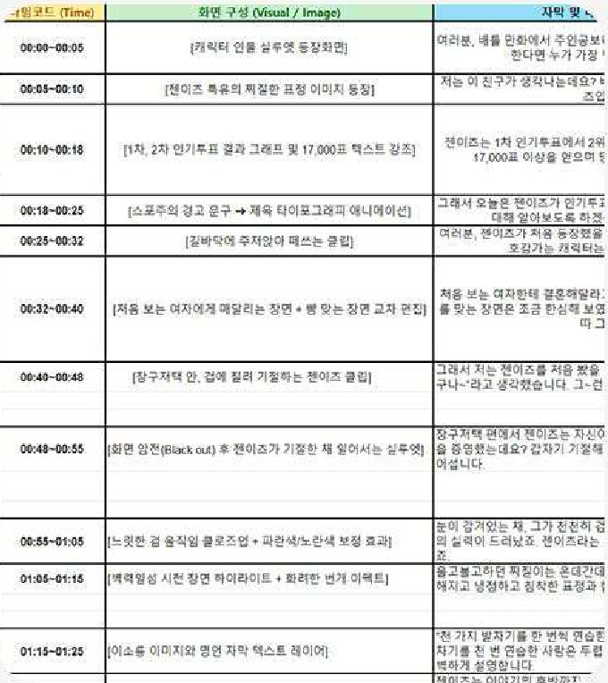
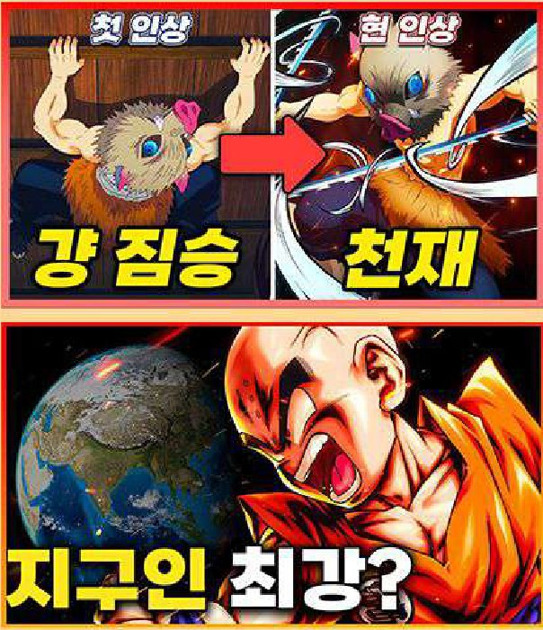
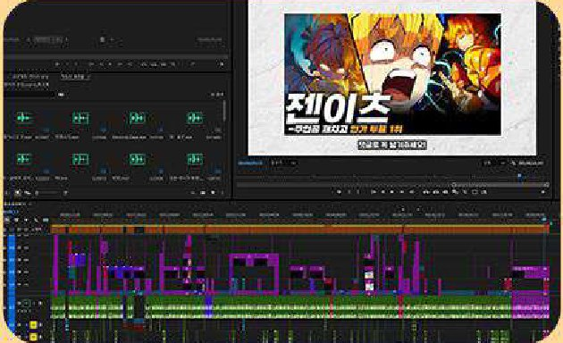
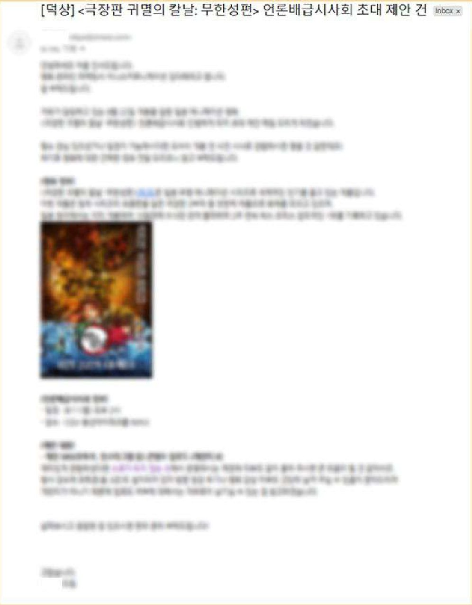

CLIENT 1인천항만공사
IPA 썰풀이 LONG-FORM
인천항과 인천에 얽힌 이야기를 한 편씩 풀어내는 롱폼 시리즈
- 기획
- 촬영 (미담당)
- 편집
- 기여도 67%
인천항 온더스팟 SHORT-FORM
인천항 현장을 찾아가 직원, 게스트와 함께 짧고 빠르게 담는 숏폼 시리즈
- 기획
- 촬영
- 편집
- 기여도 100%
Content Marketer · Video Creator
기획부터 촬영, 편집까지 직접 해내는
콘텐츠 크리에이터 박상우입니다.

Profile
애니메이션 분석 유튜브 채널 ‘덕상’을 혼자 기획하고 운영하며
대본, 썸네일, 편집, 내레이션까지 직접 맡아
누적 조회수 265만 회를 만들었습니다.
디지틀조선일보 글로벌미디어1팀에서는
인천항만공사, 재외동포협력센터, 메디컬코리아의
SNS 콘텐츠를 기획하고,
숏폼, 롱폼, 인터뷰 영상을 촬영·제작했습니다.
클릭을 부르는 기획과 끝까지 보게 만드는 편집,
두 가지를 모두 할 수 있는 사람입니다.
Experience
2026.05 – 2026.09
2024.11 – 현재
서포터즈 활동
2025.08 – 2025.10
2025.07 – 2025.08
2024.11 – 2024.12
Skills

Figma
한글Project 01
2026년 5월부터 9월까지 글로벌미디어1팀에서 세 곳의 공공기관 클라이언트를 맡아
SNS 콘텐츠를 기획하고 촬영·편집했습니다.
인천항과 인천에 얽힌 이야기를 한 편씩 풀어내는 롱폼 시리즈
인천항 현장을 찾아가 직원, 게스트와 함께 짧고 빠르게 담는 숏폼 시리즈
‘OK스토리’ 시리즈, 센터 행사 현장의 촬영 구성 기획부터 촬영까지
‘We are OK’ 시리즈, 1인을 중심으로 한 인터뷰 영상 촬영 및 제작
생성형 AI로 만든 애니메이션 숏폼 콘텐츠
시민 인터뷰 영상 촬영 및 제작
Project 02
애니메이션과 캐릭터를 분석하는 1인 유튜브 채널을 기획부터 운영까지 혼자 맡았습니다.

덕상@덕상_0_0채널 바로가기 →
시청자 이탈을 막기 위해 후킹 포인트와 흥미로운 주제를 갖춘 대본을 타임코드 단위로 설계합니다.

모바일에서도 한눈에 들어오는 굵은 폰트와 클릭을 자극하는 질문형 문구를 넣습니다.

템포 있는 컷 편집과 자막, 효과음으로 리듬을 만들고, 신뢰감을 위해 내레이션을 직접 녹음합니다.

개봉 전 귀멸의 칼날 분석 영상을 연속으로 올려 관련 IP 검색 알고리즘과 타깃 시청층을 미리 확보했습니다.
채널 전문성을 인정받아 극장판 마케팅사의 시사회 초청을 받고, 홍보 가이드라인과 엠바고 일정에 맞춰 리뷰 콘텐츠를 기획·제작했습니다.
정식 개봉 전 업로드로 초기 검색 트래픽을 확보해 노출수 58.2만, 조회수 4.2만을 기록하고 예매를 유도했습니다.
| 좋아요 비율 | 조회수 | 시청 시간 | 구독자 | 노출수 |
|---|---|---|---|---|
| 97.5% | 2,657,125회 | 65,286.8시간 | 3,484명 | 20,147,753회 |